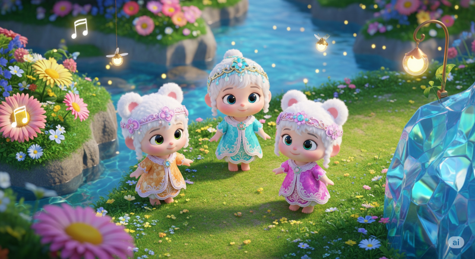

혹시 모든 소셜 미디어 플랫폼 중 유튜브가 가장 높은 수익과 안정성을 제공한다는 사실을 아시나요? 2024년에만 유튜브는 크리에이터에게 180억 달러(약 24조 원) 이상을 지급했습니다. 놀라운 점은 이 수익의 상당 부분이 얼굴을 전혀 드러내지 않는 '페이스리스(Faceless)' 채널에서 발생한다는 것입니다.
최근 'Fairy Tales and Stories for Kids'라는 채널은 기존 영화나 동화를 바탕으로 한 애니메이션 스토리 영상만으로 수백만 뷰를 기록하고 있습니다. 이 채널의 연간 추정 수입은 무려 50만 달러(약 6억 8천만 원)에 달합니다. 이는 오직 조회수만으로 벌어들이는 수익일 뿐입니다. 이들이 할 수 있다면, 여러분이라고 못할 이유가 있을까요?
오늘 이 글에서는 애니메이션 제작 기술이나 얼굴 공개 없이, 이 비즈니스 모델을 완전히 자동화하여 월 수천 달러의 부수입을 만드는 방법을 알려드리겠습니다. 강력한 AI의 힘을 빌리면 이 모든 것이 그 어느 때보다 쉬워졌습니다. 지금부터 그 비법을 단계별로 모두 공개합니다!
1단계: AI로 영상 아이디어 무한 생성하기
성공적인 채널을 만들기 위해 가장 먼저 할 일은 어떤 이야기를 만들지 정하는 것입니다. 우리는 더 똑똑하게, AI를 활용해 이 과정을 해결할 것입니다.
영감 얻기 및 아이디어 구체화
먼저, 이미 성공한 채널들을 분석하며 어떤 종류의 이야기가 인기가 있는지 파악합니다. 하지만 단순히 모방하는 것은 금물입니다. 영감을 얻는 용도로만 활용하세요. 그 다음, AI 도구(예: ChatGPT, Trend Assist AI)를 사용해 독창적인 아이디어를 얻습니다.
- 동화 아이디어 얻기: AI에게 "어린이를 위한 독창적인 동화 이야기 아이디어를 10개 알려줘"라고 요청하여 수많은 영상 주제를 얻을 수 있습니다.
- 채널 이름 정하기: "동화 애니메이션 채널에 어울리는 이름 추천해줘"라고 요청하여 창의적인 채널 이름을 만들고, 유튜브에서 사용 가능한지 확인합니다.
2단계: 단 하나의 프롬프트로 애니메이션 영상 만들기
이제 아이디어를 실제 영상으로 만들 차례입니다. 과거에는 캐릭터를 그리고, 애니메이션을 입히고, 목소리를 녹음하고, 편집하는 등 수많은 시간과 노력이 필요했습니다. 하지만 이제는 단 하나의 플랫폼으로 이 모든 과정을 해결할 수 있습니다.
영상 제작의 두 가지 길
1. 어려운 길 (수동 제작): Canva로 캐릭터를 만들고, Meta AI의 'Animated Drawings'로 움직임을 준 뒤, ElevenLabs로 목소리를 입혀 수동으로 편집하는 방법입니다. 무료지만, 영상 하나에 몇 시간이 걸리고 상당한 창의력이 필요합니다.
2. 쉬운 길 (원클릭 자동 제작): 오늘 우리가 집중할 방법입니다. 바로 Invideo AI를 사용하는 것입니다. 이 플랫폼은 단 하나의 텍스트 프롬프트를 입력하면 몇 분 만에 완벽한 애니메이션 영상을 자동으로 만들어줍니다.
Invideo AI 사용법 (단계별 가이드)
Invideo AI는 현재 시장에 출시된 기능 중 가장 혁신적인 기능을 제공합니다. 사용법은 놀라울 정도로 간단합니다.
- 프롬프트 입력: Invideo AI에 접속하면 바로 보이는 텍스트 상자에 만들고 싶은 영상의 내용을 자세하게 입력합니다. 프롬프트가 상세하고 구체적일수록 결과물의 퀄리티가 높아집니다.
- 프롬프트 예시: "날개가 없이 태어난 어린 요정이 나는 것이 전부인 땅에서 영리함과 친절함으로 날개 없이도 높이 날 수 있다는 것을 증명하는 5분짜리 따뜻한 이야기. 희망찬 음악과 마법 같은 마을을 배경으로 만들어줘."
- AI 영상 생성: 프롬프트를 입력하고 잠시 기다리면, AI가 대본, 애니메이션, 배경음악, 성우 목소리까지 포함된 완전한 영상을 생성해 줍니다.
3단계: AI가 만든 영상, 내 마음대로 수정하기
AI가 만든 영상이 훌륭하지만, 때로는 내 취향에 맞게 조금 더 다듬고 싶을 수 있습니다. Invideo AI는 이 또한 간단하게 해결합니다.
편집 커맨드 박스 활용법
영상 미리보기 아래에 있는 'Edit Command' 상자를 통해 간단한 명령어로 영상을 수정할 수 있습니다.
- 분위기 변경: "영상을 좀 더 감동적으로 만들어줘" 또는 "영상 마지막에 교훈을 추가해줘"와 같이 명령할 수 있습니다.
- 특정 장면 교체: 마음에 들지 않는 클립을 선택하고 'Generate New Media'를 클릭합니다. "이 새를 귀여운 개구리로 바꿔줘"라고 입력하면 AI가 즉시 새로운 장면을 생성해 줍니다.
- 목소리 복제(Voice Cloning): 내 목소리를 녹음하여 영상의 내레이션으로 사용할 수도 있습니다. 'Clone your voice' 기능을 통해 나만의 목소리를 추가하고, 커맨드 박스에 "내 목소리로 변경해줘"라고 입력하면 됩니다.
참고: Invideo AI는 무료로 체험할 수 있지만, 이 글에서 소개된 고품질 애니메이션 생성 기능(Generative Capabilities)을 사용하려면 유료 플랜($96/월)이 필요합니다. 이는 스톡 영상이 아닌, 세상에 단 하나뿐인 오리지널 영상을 만들어준다는 점에서 큰 가치가 있습니다.
최종 마무리: 다운로드와 썸네일
영상이 마음에 들게 완성되었다면, 'Download' 버튼을 눌러 컴퓨터에 저장합니다. 썸네일은 복잡하게 만들 필요가 없습니다. 영상에서 가장 인상적인 장면을 스크린샷하여 그대로 사용하면 됩니다.
4단계: 채널 성장과 수익화 전략
이제 영상을 업로드하고 채널을 키울 시간입니다. 다음 전략을 활용하여 성장을 가속화하세요.
숏폼 콘텐츠를 활용한 성장 전략
긴 영상(롱폼)과 함께 짧은 영상(숏폼)을 적극적으로 활용하세요. 긴 영상에서 가장 흥미로운 부분을 1분 미만으로 잘라 유튜브 쇼츠(Shorts)나 틱톡, 릴스로 업로드하는 것입니다. 이 숏폼 콘텐츠는 더 많은 잠재 시청자에게 도달하여, 여러분의 메인 채널(롱폼 영상)으로 유입시키는 강력한 깔때기(Funnel) 역할을 합니다.
기억하세요. 더 높은 수익은 일반적으로 롱폼 콘텐츠에서 발생하므로, 숏폼은 항상 롱폼으로 시청자를 유도하는 수단으로 사용해야 합니다.
유튜브 자동화(YouTube Automation) 비즈니스 모델
이 모든 과정은 '유튜브 자동화'라는 비즈니스 모델로 불립니다. 한번 시스템을 구축해두면, 최소한의 노력으로 꾸준히 콘텐츠를 생산하고 수익을 창출하는 것이 가능합니다. AI 도구를 활용하면 이 시스템을 구축하는 것이 그 어느 때보다 쉬워졌습니다.
오늘 배운 전략과 지식을 바탕으로 여러분도 이제 수입을 창출하는 유튜브 채널을 시작할 준비가 되었습니다. 처음에는 모든 것이 복잡해 보일 수 있지만, 한 단계씩 차근차근 따라 하다 보면 어느새 성장하는 채널의 주인이 되어 있을 것입니다. 여러분의 기업가적 여정을 응원합니다!